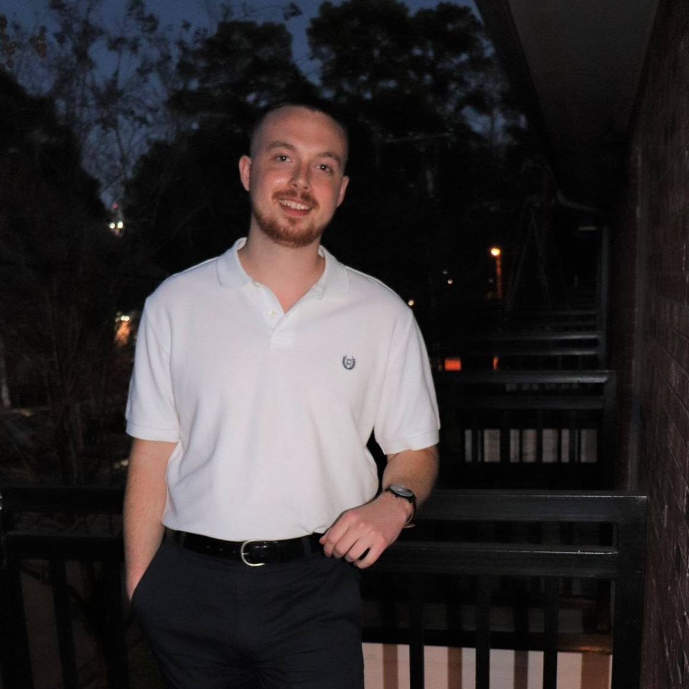

Hey there, it's Jake. Long story short, I'm a 5th year Computer Science student at Stephen F. Austin State University in Nacogdoches, TX. You've probably never heard of Nac, as we call it. I certainly hadn't until I ended up going to school there. I'm about to start my very last semester(yay!) and graduate this coming May 2019. My goal is to get a job/internship in Denver, CO and make my big move out to the Rockies. I'm from Texas but grew up in Seattle for 13 years. We moved back to Texas the summer before my senior year of high school and ever since then I have missed the mountains, snow, and colder weather. Here is a recent picture of me on my balcony, trying to look grownup lol.
Technology is a big part of my life. When I started school at SFA, I was a Sound Recording Technology major(SRT). I'll get to my musical interests later, but the program wasn't what I thought it would be and I knew I didn't want to continue after that first year. That summer I had what I call an "early life crisis". I had always known what I wanted to do growing up. If I lost interest in one thing, it was replaced with another. That summer of 2015 I was in limbo. For the first time I didn't know what I wanted to do with my life and I was closer to needing to know than ever. I almost joined the Navy, except one other interest grabbed my attention.